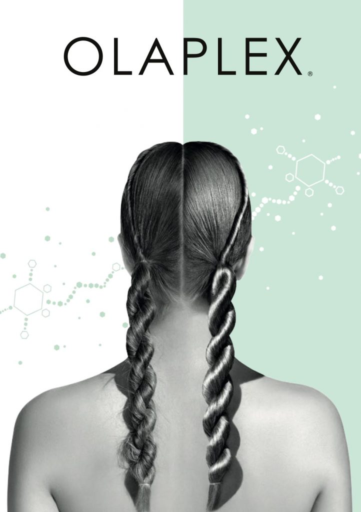
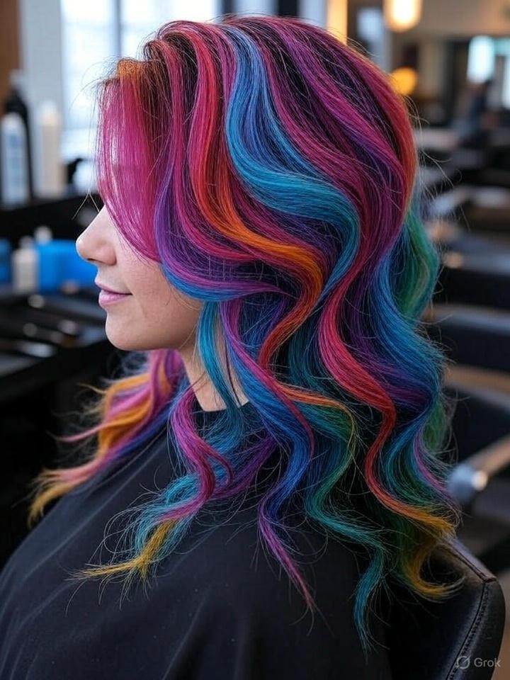

Hair Extensions
Die erste Methode die für die sichere komfortable und lang haltbare Haarverlängerung wurde von Great Lengths entwickelt. Heute sprechen eine ganze Reihe einzigartiger Vorteile für Hair-Extensions von Great Lengths:
- Volles und langes Haar für jedes Styling
- Hochwertige Echthaar-Strähnen Brilliante und lang haltbare Farben
- Unsichtbare, kaum spürbare und extrem flache Bondings
- Sicherer und dauerhafter Halt
- Exklusic bei Partnern von Great Lengths
OLAPLEX
#it's not a trend It's a revolution
WAS IST OLAPLEX?
- OLAPLEX® mit dem einzigartigen 8-fach patentierten Wirkstoff Bis-Aminopropyl Diglycol Dimaleate ermöglicht dauerhaft repariertes, starkes und gesundes Haar trotz Coloration • Die Lösung für eine Vielzahl unserer Haarprobleme
- Anders als herkömmliche Pflegeprodukte wirkt OLAPLEX® nicht an der Haaroberfläche, sondern repariert Haarschäden im Inneren des Haares • OLAPLEX® baut das Haar dauerhaft von innen auf
- Stärkeres und glänzenderes Haar als jemals zuvor • Drastisch reduzierter Haarbruch • Erhöhte Elastizität • Länger anhaltende Farben

Colorationen & Strähnchen
Entdecken Sie die Kunst der Colorationen und Strähnchen in unserem Salon! Mit hochwertigen Farbtechniken verleihen wir Ihrem Haar lebendige Nuancen und natürlichen Glanz. Unsere erfahrenen Stylisten verwenden schonende Produkte, um Ihr Haar zu schützen und langanhaltende Ergebnisse zu erzielen. Besuchen Sie uns und lassen Sie sich von unseren maßgeschneiderten Farblösungen begeistern!
- Sanfte Tönungen für einen natürlichen Look
- Kräftige Vollfärbungen für intensives Farberlebnis
- Individuelle Strähnchen für mehr Tiefe und Bewegung
- Moderne und klassische Looks, die Ihre Persönlichkeit unterstreichen
